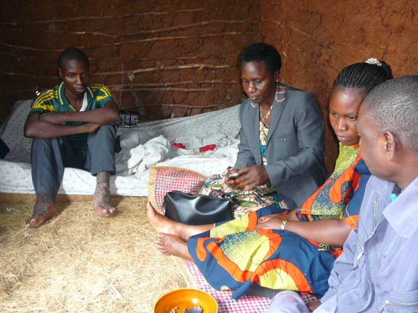

Het kost € 35 om iemand een menswaardig sterfbed te geven.
Het palliatieve team van Rubya bezoekt ernstig zieke mensen in hun dorp. Dankzij de stichting kunnen zij pijn bestrijden en nabestaanden begeleiden.
Zorg in de dorpen
In 2014 volgde een verpleegkundige uit Rubya, dankzij de stichting, een jaar lang de speciale opleiding palliative care in Kampala bij Hospice Africa Uganda. Samen met collega's vormde zij een palliative care team dat actief is in het ziekenhuis en patiënten thuis bezoekt.
Eens per maand bezoekt het team de dorpen. Tussentijds worden ernstig zieke patiënten verzorgd door village health workers: leken met een aanvullende opleiding. Ongeveer 20% van de patiënten heeft morfine nodig om pijnvrij te zijn.
Een fiets voor elke village health worker
Om hun werk te vergemakkelijken vroegen de village health workers om fietsen voor hun huisbezoeken. Een fiets kost € 100 tot € 200.
Op het verjaardagsfeest van onze voorzitter werd al € 1.400 opgehaald: genoeg voor minimaal 7 en maximaal 14 fietsen. Doet u ook mee?
Donkerbruin: zeker gefinancierd (7 × € 200). Lichter: nog mogelijk bij € 100 per fiets.
Hoe het is gegaan
Opleiding in Kampala
Een jaar lang palliative care bij Hospice Africa Uganda, daarna 6 weken training door Clavera Biro.
Cursussen in Rubya
In februari geven twee docenten uit Kampala een cursus aan de staf. In september volgt een herhalingscursus. Essentiële pijnbestrijding is nog niet altijd mogelijk door een tekort aan morfinedrank.
Morfine in drinkvorm
Het project loopt goed: er is morfine in drinkvorm voorradig.
159 nieuwe patiënten
Daarnaast 266 herhaalconsulten, vooral huisbezoeken. In totaal overleden 63 patiënten. David Kansheba behaalt zijn bachelor Palliative Care en wordt docent op het RHTI.
Twee opfriscursussen
In maart en juli worden opfriscursussen gegeven aan het team en de staf. Het team krijgt motorfietsen, door de bisschop gezegend.
Erkenning van de overheid
De District Medical Officer van Muleba wil dat het team andere gezondheidswerkers traint. Een poster over het team wordt geaccepteerd door het Europese Congres voor Palliatieve Zorg in Rotterdam.
Fietsen voor de dorpen
Afspraken met de overheid over voldoende morfine. € 1.400 opgehaald voor fietsen voor village health workers.
Foto's uit Rubya
€ 35 geeft één mens een waardig afscheid
Het palliatieve team bezoekt elk jaar 300 nieuwe patiënten. Elke gift van € 35 financiert de zorg voor één van hen.
NL66ABNA0624513211t.n.v. Stichting Vrienden van Rubya · BIC ABNANL2A